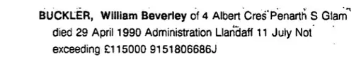

EV-0274 — HMCTS 1991 probate-calendar entry: William Beverley Buckler, 4 Albert Cres, Penarth
Record status: The HMCTS calendar entry is visually confirmed from the supplied screenshot. Its identification as William (“Billy”) Buckler remains possible, not established.
| Evidence ID | EV-0274 |
|---|---|
| Source | HMCTS Find a Will — 1991 probate calendar, probatesearch.service.gov.uk |
| Calendar entry name and address | BUCKLER, William Beverley of 4 Albert Cres, Penarth, S Glam |
| Death date stated by calendar | 29 April 1990 |
| Administration | Llandaff, 11 July 1991 (as catalogued from the 1991 calendar) |
| Estate value band | Not exceeding £115,000 |
| Calendar reference | 9151806686J |
| Evidence grade | Grade 2 — contemporaneous official calendar entry partly inspected; underlying grant not inspected |
| Identity assessment | Possible match to William “Billy” Buckler; not proven by this entry alone |
HMCTS calendar image

Transcription
“BUCKLER, William Beverley of 4 Albert Cres Penarth S Glam died 29 April 1990 Administration Llandaff 11 July Not exceeding £115000 9151806686J.”
Line breaks and punctuation have been normalised for readability; the wording and figures are transcribed from the visible calendar entry.
What this record establishes
The screenshot confirms that the HMCTS Find a Will calendar display contains an entry under the surname BUCKLER for a William Beverley recorded at 4 Albert Cres, Penarth, South Glamorgan. The entry states a death date of 29 April 1990, records administration at Llandaff on 11 July, gives the value band as not exceeding £115,000, and displays reference 9151806686J.
The displayed calendar is an official index/calendar record. It is not the underlying grant document and it is not a death certificate. The grant itself has not been ordered or inspected.
Identity and date: unresolved
Do not merge the two dates. The HMCTS calendar states 29 April 1990. The family-reported date for Billy is 29 May 1990. This entry is a possible name-and-location match, but the one-month discrepancy remains unresolved.
The South Wales Echo snippet dated 2 June 1990, which says Billy died “suddenly this week”, is broadly compatible with a late-May death but does not independently establish the exact date or prove that the calendar entry refers to Billy. The full newspaper item and a death certificate would be needed for further resolution.
The middle name “Beverley” and the address “4 Albert Cres” are useful identifiers for future checking. No inference is made here that this William Beverley Buckler is necessarily the same person as William (“Billy”) Buckler.
Provenance and integrity
The source image was supplied in this conversation on 19 November 2026. The original uploaded capture is 690 × 1535 pixels, 118,104 bytes. Its SHA-256 is:
de76a60493bcbf574a4f8c9c5426bf452b60a9924183f0cf37a8ea5d9fd40b5c
The public page serves a focused WebP derivative of the visible entry, 500 × 84 pixels, 5,886 bytes. Its SHA-256 is:
1c1e4f8db78b15a6e3f3c9a81f1da38fc4a377bb293f0b91d428e77c540339f7
The screenshot shows the service's domain and the calendar image, but not the complete page URL, search parameters or navigation path. The original full-screen capture is not reproduced on this public page; its hash is recorded above to distinguish it from the displayed crop.
Limitations and next verification
- This is a screen capture of an HMCTS calendar display, not the underlying grant or a certified copy.
- The screenshot shows the entry, but does not independently establish the identity of the deceased.
- The calendar's 29 April date conflicts with the family-reported 29 May date; this record does not resolve that conflict.
- The visible screenshot does not expose the full image URL or search query used to reach the calendar page.
Further primary checks would be the underlying Llandaff grant record and the death registration/certificate, comparing the full name and address. Until then, the identity status remains possible, not proven.
Page version and change log
| Version | Date (UTC) | Change |
|---|---|---|
| 1.0.0 | 20 October 2026 | Initial transcription and research note. |
| 1.0.1 | 19 November 2026 | Added the supplied HMCTS screenshot crop; corrected the displayed name and address to “William Beverley of 4 Albert Cres”; captured the exact date, administration details and calendar reference; downgraded the identity conclusion to possible/unproven; recorded image integrity hashes and limitations. |
Cited on
14 pages link here.
- EV-0290 — SNIPPET ONLY: South Wales Echo, 2 Jun 1990, p.2: “Billy died suddenly this week”; he “made a detour around Llandough so never had to pass the site of Great House Farm”
- Evidence Register
- Wayback artifact index
- EV-0274 — Probate calendar 1991: “BUCKLER, William Beverley … of Penarth … died 29 April 1990”, administration granted at Llandaff on 11 July 1991 (probable match for William “Billy” Buckler; identity not proven); no grant found for Mary (Nancy) Williams under “Buckler” in 1983–87
- Full catalogue (metadata) · The E-book Shelf
- Master Change Log — Evidence Integrity Corrections (October 2026)
- Master Timeline
- Record - EV-0290 — SNIPPET ONLY: South Wales Echo, 2 Jun 1990, p.2: “Billy died suddenly this week”; he “made a detour around Llandough so never had to pass the site of Great House Farm”
- Record - RES-0002 — Central chronology
- Record - WIKI-0033 — Master Timeline
- Record - WIKI-3923 — Master Change Log — Evidence Integrity Corrections (October 2026)
- Record - WIKI-4517 — Evidence Register
- Record - WIKI-7342 — Wayback artifact index
- Title Theory — The Paper Siege